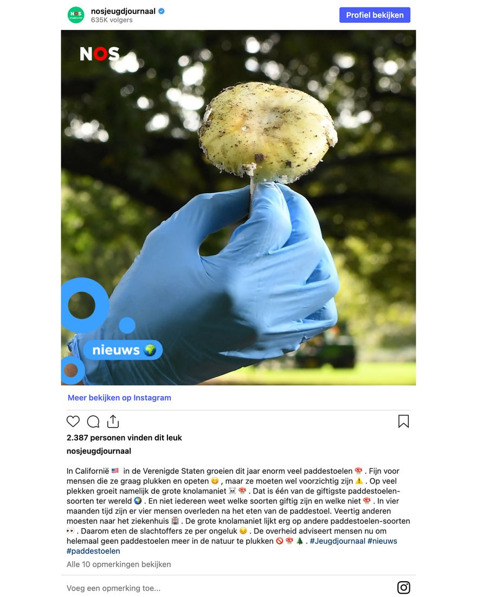

Groene knolamaniet, geen grote knolamaniet
24 augustus 2026 · NOS Jeugdjournaal
- Op de foto
- Groene knolamaniet
- Het ging over
- Grote knolamaniet

Het NOS Jeugdjournaal waarschuwt kinderen voor de grote knolamaniet. Twee keer in hetzelfde bericht.
De soort heet groene knolamaniet.
De waarschuwing zelf klopt precies, alleen de naam niet, @nosjeugdjournaal!
Bron: NDFF Verspreidingsatlas en IVN